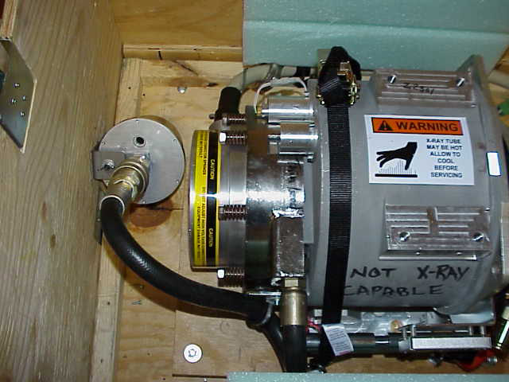
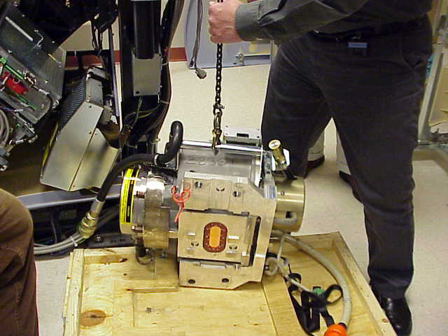

Operating Documentation
Direction 5193891-800, Rev# 5
LightSpeed 5.X Pro16 Limited Access Service Information (Adv)
Operating Documentation |
| Required Persons | Preliminary Reqs | Procedure | Finalization |
|---|---|---|---|
| 1 |
The objective of this procedure is to describe the packaging and removal procedure of the Performix Pro 100 X-Ray Tube. The tube packaging for is similar to that of previous LightSpeed products, with some minor changes.
| Last Revised: | 3 December, 2004 |
| Item | Qty | Effectivity | Part# | Manufacturer | |
|---|---|---|---|---|---|
| Tube mounting hardware kit | 1 - Shipped with replacement tube | - | - | - | |
| INJURY POSSIBLE FROM UNDER-RATED SLING. | |
| SLINGS THAT ARE NOT RATED FOR OVER 300 LBS WERE NOT DEVELOPED TO HOLD THE PERFORMIX PRO 100 X-RAY TUBE. | |
| IF YOU NEED TO USE A SLING, MAKE SURE YOU HAVE A SLING RATED FOR OVER 300 LBS. |
Remove the cover. Flip it over and place near gantry. The cover will become the base of the container for returning the dead tube from the field.
Remove the container’s center section, leaving the tube and crate base together.
Disconnect the tube from compensation bellows (attached to tube crate) from the tube (see Illustration 1).
Illustration 1: Tube Crate, Showing Compensation Bellows

Place the old tube onto the new base (was the crate cover).
Use the sling / hoist to lift the tube to the gantry. Newer tubes do not require a sling to lift. Lowering a tube onto the base or raising one looks the same (see Illustration 2).
Illustration 2: Lifting New Tube

Reassemble the center section of the box onto the base.
Place the original base on top as the cover.
If necessary, the bellows mounted to the inside of the tube crate can be used to hold excess oil that may result from the tube change procedure.